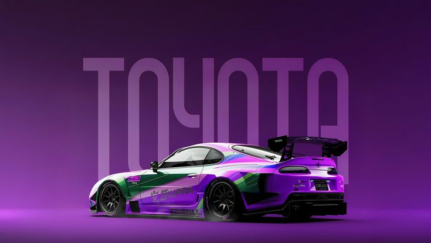

Automate Your YouTube Uploads With Gemini AI
Import videos in bulk, auto-generate SEO-optimized metadata, and publish content on a calendar schedule safely via the official YouTube API.


Explore the Creator Dashboard
The dashboard provides an intuitive, high-performance center where you can manage your uploading pipeline and keep track of your publishing statistics.
Real-Time Overview Metrics
Monitor video metrics at a glance: **Uploaded** counts (videos backed up in Drive/Cloud), **Scheduled** counts (videos mapped to dates), **Published** counts (videos live on YouTube), and **Remaining** queue items.
Quick Action Automation
Take action instantly: Click **Import Videos** to load clips into your library, **Apply Schedule** to distribute your publishing calendar, and **Start Upload** to initiate queue transfers immediately.
Unified Navigation System
Switch between views using the sticky bottom menu: navigate from the **Library** (bulk importer) to **Schedule** (calendar configuration), **Queue** (reorder list status), and **Profile** (API configurations and sign-in).
Powerful Features for Power Creators
Designed to save hours of manual video description formatting and scheduling work daily.
Bulk Video Import
Drag and drop multiple video files, select a folder, or batch import clips instantly with full size and metadata pre-checks.
Gemini AI Content Engine
Upload video files to Gemini for automatic deep visual analysis. Generate SEO titles, structured descriptions, tags, and suggested thumbnail texts.
Smart Auto-Scheduling
Distribute uploads up to 90 days out. Set standard intervals (daily/weekly) or create custom upload cadences and publish slots.
Google OAuth Secure Auth
Log in securely using Google OAuth directly on your device. Authenticate and upload to YouTube and back up to Google Drive without leaving the app.
Multi-Device Sync
Dual-write architecture mirrors configurations securely to Firebase Firestore, allowing real-time dashboard status tracking across devices.
Landscape Shorts Transcoder
Videos under 60 seconds detected as landscape are automatically transcoded to square (1:1 aspect ratio) with black borders via FFmpeg before publishing.
Interactive App Tour & Guide
Click through the tabs below to explore every screen of the YT Publisher app and learn how to use its features.
Creator Command Center
The **Dashboard** is the app's central hub. It provides real-time statistics of your channel publishing queue and quick action buttons to automate workflows.
Overview Metrics
Monitor status counts: **Uploaded** (videos backed up in the cloud), **Scheduled** (queued with release dates), **Published** (live on YouTube), and **Remaining** queue items.
Trigger Quick Actions
Click **Import Videos** to load new MP4 files, **Apply Schedule** to set post times, or **Start Upload** to force sync the queue immediately.
Interactive Preview
View active uploads, progress bars, and custom thumbnail previews directly on your dashboard widget cards.

Manage Your Video Catalog
The **Video Library** serves as your local media vault. It keeps track of raw MP4 uploads and displays key properties at a glance.
Import Clips
Click the **"+" icon** in the top right to import one or multiple video files from your hard drive.
Format Auto-Detection
The app automatically parses video resolutions and durations, highlighting files under 60 seconds with a red **SHORTS** badge.
Search & Filter
Use the search bar to locate files or toggle list/grid layouts to clean up your dashboard.

AI-Powered Metadata Editor
Draft search-optimized titles, hashtags, and descriptions using Gemini's visual analysis models.
Generate SEO Fields
Click the purple **"Generate AI Details"** button. The app streams your video to Gemini to generate context-specific descriptions.
Adjust Visibility Settings
Change your publication settings (Private, Public, Unlisted) and declared age-restrictions inside custom dropdown menus.
Custom Thumbnail Upload
Upload a custom image thumbnail using the file picker to override YouTube's auto-generated frames.

Automate Upload Timelines
Distribute publication dates up to 90 days out based on custom cadences and targeted upload times.
Define Start Date & Time
Choose the date to start publishing and standard time slots (e.g. 11:00 PM) for your posts.
Select Publishing Cadence
Pick **Daily** (1 clip per day), **Weekly**, or **Custom Intervals** (e.g. 1 clip every 3 days).
Preview Release Calendar
Review the calculated schedule slots under **Schedule Preview** and click Apply to commit the dates.

Manage Active Publishing
Control the background auto-upload loop, review publication statuses, and view recent history logs.
Toggle Background Worker
Turn on the **Background Publisher** toggle switch. The background uploader will start checking for due slots every 1 minute.
Force Publishing
Click the **"⚡ Next"** button to force-publish the next due video immediately, overriding the timer.
Historical Performance Log
Track uploads under **Recently Published** to confirm successful video IDs and upload timestamps.

Channel Statistics & Setup
Verify connected Google OAuth accounts, select active AI engines, and view YouTube stats.
Channel Health Dashboard
View real-time subscriber counts, view milestones, and total published videos synced from YouTube APIs.
Configure AI Models
Select your default translation engine (**Gemini** vs **OpenRouter**) and monitor credentials connection status.
Disconnect Management
Safely disconnect accounts. Tap **"Disconnect"** to remove tokens and wipe localized database caches instantly.
Privacy Policy for YT Publisher
Last Updated: June 23, 2026
YT Publisher ("we", "our", or "us") operates the YT Publisher Android application. This application is completely free of charge. This policy details how our application handles, transfers, and secures user data, particularly Google User Data, when you connect your accounts.
1. Google API Scope Usage & Purpose
YT Publisher requests access to specific Google OAuth scopes to automate creators' content publishing flows. We strictly use these scopes for the following functionalities:
- https://www.googleapis.com/auth/youtube.upload: Used solely to stream video files from your local storage and upload them directly to your YouTube channel as scheduled.
- https://www.googleapis.com/auth/youtube.readonly: Used to retrieve channel analytics statistics (subscribers, views, video counts, and profile avatar) displayed in your private user dashboard.
- https://www.googleapis.com/auth/drive.file: Used to upload backups of video files to a designated folder in your own Google Drive storage. This ensures if local files are deleted, the background scheduler can fetch them from the cloud to prevent publication failures.
2. Data Processing and Local Storage
We believe in absolute data privacy. All operations are processed locally and securely:
- Free & Ad-Free: The app is developed to be 100% free of cost, with no hidden subscriptions, in-app purchases, or ads.
- Tokens & Keys: Your OAuth tokens, refresh keys, and Gemini AI API keys are stored locally on your Android device in secure, encrypted SharedPreferences storage.
- No External Databases: YT Publisher does NOT upload, store, or transmit your private credentials, tokens, or video files to any third-party developer servers. All REST API requests are sent directly between your device and official Google endpoints.
- Cloud Syncing: Local configuration parameters (like video names and schedules) can be mirrored optionally to your personal private Firebase Firestore document which is protected by secure user authentication rules.
3. Data Sharing & Third-Party Disclosure
We do not share, sell, distribute, or transfer any Google user data, API keys, or video assets to any third parties. All data remains inside your own private ecosystem (your device, your YouTube channel, and your Google Drive storage).
4. Data Deletion & Account Disconnection
You can revoke access to the application at any time. Clicking the **Disconnect** button inside the app settings immediately purges all local databases, cached Google tokens, and session details from your device's memory. You can also revoke access permanently through your Google Account Security Settings page.
5. Contact Details
If you have any questions regarding this Privacy Policy or Google API Scope usage, please contact us at: nikoorkn@gmail.com
Rules & Regulations
Last Updated: June 23, 2026
By downloading and using the YT Publisher Android application, you agree to comply with the following Rules and Regulations (Terms of Use). Please read them carefully.
1. Free & Open Use Policy
YT Publisher is provided to content creators completely free of charge. You may use it for personal or commercial video publishing pipelines. However, you may not repackage, re-sell, or distribute the application under a different brand name without prior consent.
2. YouTube Terms of Service Compliance
Since YT Publisher interacts directly with the YouTube API to publish videos, you must strictly follow YouTube's Terms of Service and Community Guidelines. Any uploads violating community standards (e.g., copyright violation, explicit content, hate speech, or harassment) are strictly the responsibility of the user.
3. Quota Limits & Fair Automation
To keep the platform safe and prevent account suspensions:
- Do not use the scheduler to upload spam, repetitive videos, or bulk-scale low-quality content designed to manipulate the platform's recommendation algorithms.
- Please be mindful of your daily YouTube API upload quota. YT Publisher is not responsible for API blockages, upload delays, or errors caused by exceeding your Google Cloud project limits.
4. Self-Hosted Infrastructure
YT Publisher operates on a serverless, local architecture. You connect your own Firebase keys and OAuth credentials. We do not provide server backups or maintain logs of your actions. If you delete local files or clear app storage without a Firebase sync setup, data cannot be recovered.
5. Disclaimer of Warranty
The application is provided "as is" and "as available", without warranties of any kind, either express or implied. We do not guarantee that the background scheduling or visual transcoding will be 100% error-free. We shall not be liable for any damage to your channel, loss of data, or operational downtime.
6. Queries and Support
For support, rule clarifications, or feedback, you can reach out to our team at: nikoorkn@gmail.com